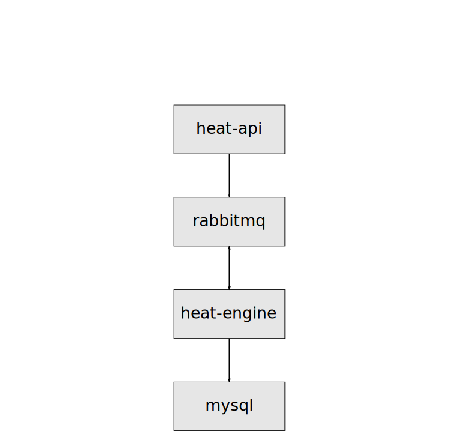
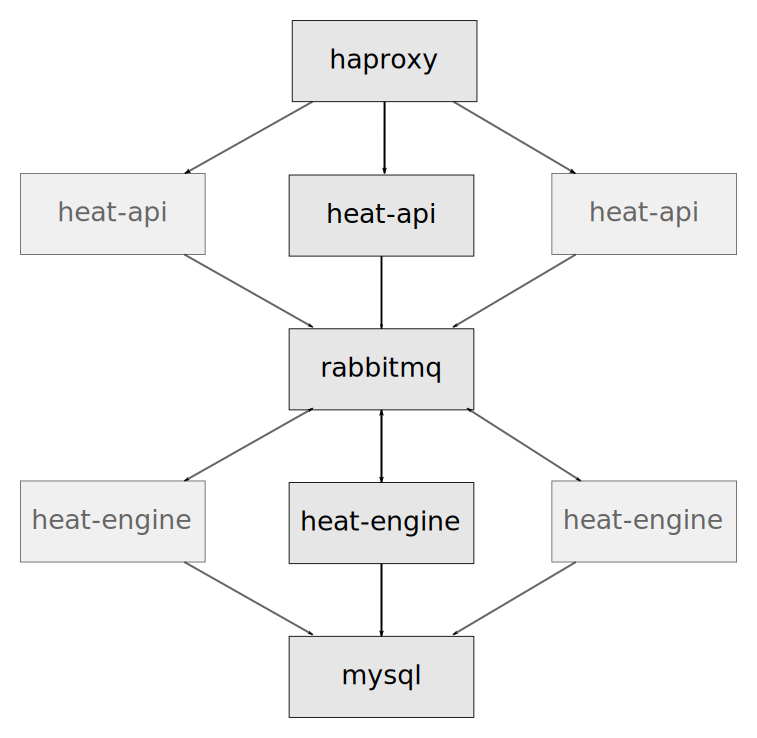

Deploying to the cloud
with golden images, Heat and Docker

Steve Baker / sbaker@redhat.com / @stevebake
Declarative vs Procedural Orchestration
- Procedural/Imperative describes a list of instructions to execute
- Declarative describes the desired state
What is Heat?
Heat is a REST service for the declarative orchestration of multi-tenant OpenStack cloud services.
What is Heat Kubernetes?
Heat Kubernetes is a REST service for the
declarative orchestration of multi-tenant
OpenStack cloud services containers.
I want to orchestrate containers in an OpenStack cloud
- No OpenStack container API :(
- Kubernetes / Docker are not multi-tenant APIs ;(
Evolution of Heat software configuration
- boot-time config - user-data script + cfn-init metadata, cloud-init / cloud-config
- config/deployment resources - shell / puppet / ansible etc
Kubelet
Processes a container manifest so the containers are launched according to how they are described.
What is a pod?
What you don't get with kubelet vs full kubernetes
- no service load balancing
- no scheduler - requires manual placement of pods
Declarative Heat template
heat_template_version: 2014-10-16
parameters:
key_name:
type: string
resources:
server:
type: OS::Nova::Server
properties:
image: Fedora-x86_64-20-20140618-sda
flavor: m1.small
key_name: {get_param: key_name}
outputs:
server_ip:
value: {get_attr: [server, first_address]}
Building a stand-alone heat appliance
To run the latest heat against a cloud with no (or older) heatHeat architecture
Heat HA architecture
Heat appliance pod
Building the docker image
# heat-base-standalone/Dockerfile
FROM fedora:20
MAINTAINER Steve Baker <steve@stevebaker.org>
ADD heat /opt/heat
ADD install-heat.sh /opt/install-heat.sh
RUN /opt/install-heat.sh
ADD config-heat.sh /opt/heat/config-heat.sh
# heat-api-standalone/Dockerfile
FROM stevebake/heat-base-standalone
MAINTAINER Steve Baker <steve@stevebaker.org>
ADD ./start.sh /start.sh
CMD ["/start.sh"]
Building the VM image
- Built using
diskimage-builder - Uses the
heat-config-kubeletelement from theheat-templatesrepository
https://github.com/openstack/heat-templates/tree/master/hot/software-config - Currently Fedora only (lots of systemd)
- Includes a tar file of docker images for import on boot
Images and Security
“...the
code responsible for downloading images is shockingly
insecure. Users should only download images whose provenance
is without question. At present, this does not include
“trusted” images hosted by Docker, Inc”
- Jonathan
Rudenberg
Images and Security
“...one of the most important ways you can protect
yourself when using Docker images is to make sure you only
use content from a source you trust and to separate the
download and unpack/install steps. The easiest way to do
this is simply to not use “docker pull” command.”
-
Trevor Jay
https://securityblog.redhat.com/2014/12/18/before-you-initiate-a-docker-pull/
Writing the heat template
resources:
heat_pod_config:
type: OS::Heat::StructuredConfig
properties:
group: kubelet
config:
version: v1beta2
containers:
- name: rabbitmq
image: {get_input: rabbitmq_image}
ports:
- containerPort: 5672
hostPort: 5672
- name: mariadb
image: {get_input: mariadb_image}
ports:
- containerPort: 3306
hostPort: 3306
env:
- name: DB_ROOT_PASSWORD
value: {get_input: mariadb_password}
volumeMounts:
- name: mariadb-data
mountPath: /var/lib/mysql
- name: heat-engine
image: {get_input: heat_engine_image}
env:
- name: RABBIT_PASSWORD
value: guest
- name: DB_ROOT_PASSWORD
value: {get_input: mariadb_password}
- name: HEAT_DB_PASSWORD
value: {get_input: heatdb_password}
- name: KEYSTONE_PUBLIC_SERVICE_HOST
value: {get_input: keystone_host}
- name: AUTH_ENCRYPTION_KEY
value: {get_input: heat_auth_encryption_key}
- name: HEAT_API_SERVICE_HOST
value: {get_input: heat_api_service_host}
- name: OS_AUTH_URL
value: {get_input: os_auth_url}
- name: heat-api
image: {get_input: heat_api_image}
ports:
- containerPort: 8004
hostPort: 8004
env:
- name: RABBIT_PASSWORD
value: guest
- name: DB_ROOT_PASSWORD
value: {get_input: mariadb_password}
- name: HEAT_DB_PASSWORD
value: {get_input: heatdb_password}
- name: KEYSTONE_PUBLIC_SERVICE_HOST
value: {get_input: keystone_host}
- name: AUTH_ENCRYPTION_KEY
value: {get_input: heat_auth_encryption_key}
- name: HEAT_API_SERVICE_HOST
value: {get_input: heat_api_service_host}
- name: OS_AUTH_URL
value: {get_input: os_auth_url}
volumes:
- name: mariadb-data
heat_pod_deployment:
type: OS::Heat::StructuredDeployment
properties:
name: 20_kubelet_deployment
config:
get_resource: heat_pod_config
server:
get_resource: server
input_values:
mariadb_image: {get_param: mariadb_image}
mariadb_password: {get_resource: mariadb_password}
rabbitmq_image: {get_param: rabbitmq_image}
heat_api_image: {get_param: heat_api_image}
heat_engine_image: {get_param: heat_engine_image}
heatdb_password: {get_resource: heatdb_password}
heat_auth_encryption_key: {get_resource: heat_auth_encryption_key}
heat_api_service_host: {get_attr: [server, first_address]}
os_auth_url: {get_param: os_auth_url}
Launching the stack
- You launch the heat-standalone template
- Heat launches VM with kubelet-enabled image
- Heat builds data describing pods to create
- VM agent fetches data, writes out pod template files
- Kubelet picks up files, creates containers
- VM agent monitors for container creation, signals Heat with results
Launching the stack
Lifecycle of container stacks
- Image releases handled with heat stack-update
- Container architecture changes handled with heat stack-update
- Other workflows handled procedurally (with zero or more stack-updates)
Evolution of Heat software configuration
- boot-time config - user-data script + cfn-init metadata, cloud-init / cloud-config
- config/deployment resources - shell / puppet / ansible etc
- config fed to service running on host - docker / kubelet
- (future) config driving heat-provisioned cluster - kubernetes / etcd / mesos
Next steps
- Expose cAdvisor stats as deployment outputs
- Bring up a full Kubernetes cluster with heat, define containers in heat template, use unmodified Atomic OS image
- Encourage Kubernetes to declare stable interfaces for its components
Other container things in OpenStack
- Nova Docker driver
https://github.com/stackforge/nova-docker - Heat contrib docker API resource plugin
- OpenStack Magnum multi-tenant
container API
https://github.com/stackforge/magnum - Heat templates for Atomic based
Kubernetes cluster
https://github.com/larsks/heat-kubernetes
Get the code
https://github.com/steveb/docker-heat-templates https://github.com/openstack/heat-templates/tree/master/hot/software-configQuestions?
Steve Baker / sbaker@redhat.com / @stevebake